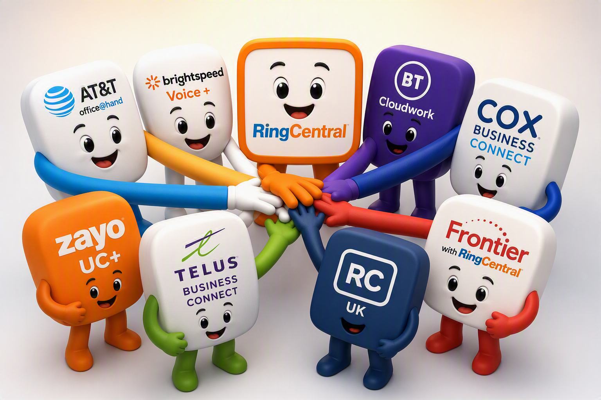
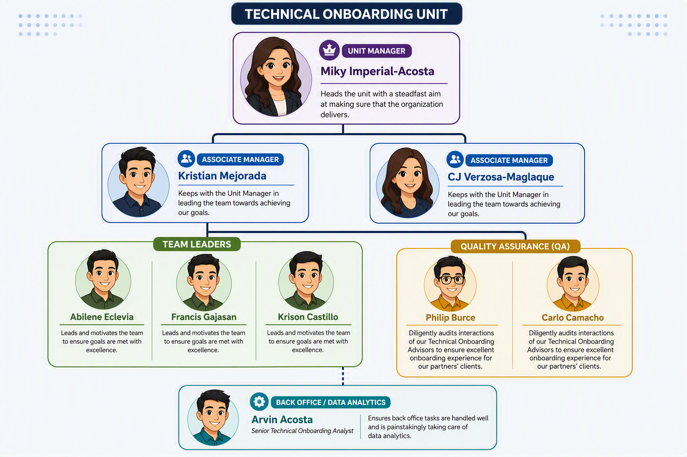

GSP TO Mission and Vision
Mission : To deliver world class technical onboarding expertise of RingCentral to its partners through unity.
Vision : To ensure growth of RingCentral GSP unit through consistent excellent output.
Welcome to the GSP TO Onesource central hub. Access all partner solutions, Quality Assurance guidelines, tools, and updates in one place.

Mission : To deliver world class technical onboarding expertise of RingCentral to its partners through unity.
Vision : To ensure growth of RingCentral GSP unit through consistent excellent output.

The unit is led by Unit Manager Miky Imperial-Acosta, whose steadfast focus ensures the organization consistently delivers results. Supporting her leadership are Associate Managers Kristian Mejorada and CJ Verzosa-Maglaque. The team is further reinforced by goal-oriented Team Leaders Abilene Eclevia, Francis Gajasan, and Krison Castillo. On the Quality Assurance front, Philip Burce and Carlo Camacho diligently audit interactions to guarantee an exceptional onboarding experience for our partners' clients. Finally, Arvin Acosta, Senior Technical Onboarding Analyst, ensures smooth back-office operations through meticulous data analytics.
Stay up to date with the latest team events, scheduled webinars, and critical operational announcements.
Select a partner below or use the main menu dropdown to view partner-specific resources.
Documentation, product updates, and operational tools for AT&T Office At Hand integration.
AT&T Office@Hand is a cloud-based Unified Communications as a Service (UCaaS) platform provided by AT&T in partnership with RingCentral. It serves as AT&T’s lead offering for business voice, video conferencing, team messaging, and contact center solutions, running directly over AT&T’s mobile, fiber, and SD-WAN networks.
Resources and integration standards for Brightspeed Voice + workflows.
Guides, escalation paths, and system setups for BT Cloudwork partners.
Key information regarding COX Business Connect deployments and support.
Co-branded solutions, technical updates, and process docs for Frontier With RingCentral.
Regional UK partner operational resources and compliance guidelines.
Comprehensive technical guides for Telus Business Connect integration.
Support documents and setup steps for Zayo UC + implementation.
Quality assurance standards, metrics, recognition, and process blueprints.
Latest updates to quality checks, policy shifts, and evaluation parameters.
Celebrating top performers who consistently exceed quality expectations!
Standardized Operating Procedures (SOPs), cheat sheets, and evaluation rubrics.
Quick access to internal GSP utilities, audit tools, and productivity calculators.
| Tool Name | Link | Description |
|---|---|---|
| GSP Quick Reference Guide | GSP Quick Reference Guide | This is where you can see updated information about Brands' directories and some processes |
| GSP Account Verification Guide | GSP Account Verification Guide | Access this to know more about our established process for verifying clients using SCP |
| Telus Business Connect Updated Feature Matrix | Telus Business Connect Updated Feature Matrix | This is where you can access features available based on Telus Business Connect customer's plan |
| SFDC GSP TO Call Template | SFDC GSP TO Call Template | This is your guide in making sure you are able to have proper onboarding call flow as well as ensure that you are able to cover essential tasks/topics within the whole session. |
| Portability Checker | Number Portability Checker | Instead of directly submitting the number the customer needs to port in using Service portal, you can first use this to see if the number is portable |
| RC Support Site | RC Support Site | This is the RC's main support site. You can visit this site for some support articles that you can find helpful in supporting your customer |
| Provisioning Guide Microsite | Provisioning Guide Microsite | When it comes to provisioning, this is you one of your bestfriends especially for BYOD devices |
| Care Connect Hub | Care Connect Hub | Usually used by Technical Team, this can be a source of information for you to support your customer during your onboarding |
| RC Supported Devices(BYOD) | RC Supported Devices(BYOD) | If a customer wants to provision his BYOD, you may want to look at this first to qualify his device |
| TCR Registration Checklist | TCR Registration Checklist | Access this to be guided on what pre requisites the customer must have before registering for SMS feature |
Additional resources, escalation points, and external utilities.
Contact directory, extension reference lists, and diagnostic tools.